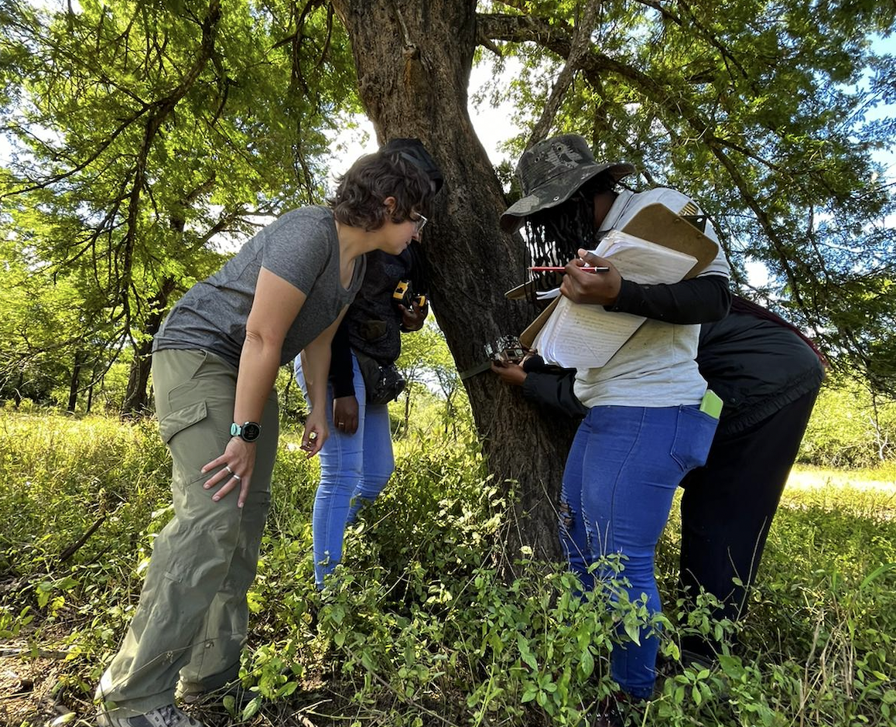

Chapter 8 Fieldwork

For some members of the Gaynor Lab, fieldwork will be an important component of research. This page is created to share information and expectations regarding local and international fieldwork, and will grow as our members begin to work in additional field sites. Please update this page with the most recent information as you prepare and complete your field seasons.
8.1 Planning
You will need to carefully plan your fieldwork as part of your overall work plan. Well before embarking on field work you should prepare the following items and/or discuss them with Kaitlyn:
- Objectives of field work
- Proposed timing
- Proposed budget (and sources of funds secured vs. needed). Can include range, e.g. from cheapest to dream budget
- Permits: are permits required (e.g. from provincial/local governments? First Nations?)
- Ethics: is an Animal Care or Human Ethics protocol required? (see below)
- Safety: a field safety plan is required (see below)
- Are there particular considerations regarding Equity, Diversity and Inclusion (including anti-racism, reconciliation, capacity-building)?
As you are more than likely researching live wild animals (even if through non-invasive techniques) you will need to complete the UBC Animal Care protocols (or be included under an existing one for WildCo) and if you are also including human subjects, you will need to complete the Human Ethics protocol (which may be needed for public privacy in camera trap surveys, participant surveys, or engaging with communities).
8.2 Field safety
UBC Student Safety Abroad has some information that is relevant for people traveling abroad for fieldwork. If you are doing international fieldwork, you will need to register with UBC’s Safety Registry. Depending on the country you are going to, there may be additional steps or forms you will need to take or fill out (e.g register with the Canadian government). Be sure to check the government page for travel advisories. The email for Safety Abroad is safety.abroad@ubc.ca. On campus, they are located in the UBC Life Building (1100-6138 Student Union Boulevard).
Physical and emotional safety is paramount in the field. If you ever feel unsafe, please try to leave the situation and contact Kaitlyn immediately. We’ll have a more detailed safety protocol in place here before anybody in the lab begins fieldwork.
Sarah is going to add to this :)
8.2.1 Field safety plans
Prior to conducting any field research while affiliated with UBC, you must complete a travel and field safety form to be approved through the Department of Zoology. Kaitlyn has drafted these in the past, and we can build on old versions, so talk to her prior to starting to write a plan.
8.2.2 First aid
All lab members are strongly encouraged to complete a wilderness first aid course prior to their first field season. Coast Wilderness Medical Training offers a 40-hour wilderness first aid course about twice a month. The course is taught in Pacific Spirit Park and can either be taken over two weekends or in 4 consecutive days. Upon completion you will earn a Red Cross Wilderness First Aid certificate with CPR-C. Kaitlyn can cover the expenses of this course.
8.3 Travel insurance & medical care
UBC Health Insurance provides Travel Insurance, however, not all medication is covered (e.g. anti-malarial medication) and most travel vaccines are not covered. For detailed information about what may or may not be covered by your insurance plan, it is recommended that you check out the AMS Student Care website and to directly contact Student Health Services (1-877-795-4421). On campus, the address is AMS/GSS Care Office Room 3128, The Nest Building, 6133 University Boulevard.
If you need medication or vaccines for travel to particular countries you can get these at a travel clinic. There are several located throughout Vancouver and you may need to call ahead for an appointment or to check that the vaccine you need is in stock at the clinic.
8.4 Animal Care and Use
You need to create an account on UBC RISe (Research Information Systems) and complete the ethics module. Talk to Kaitlyn about whether there is an existing ACUC protocol for your research project, to which you can be added, or whether you will need to submit a new one.
8.5 Gorongosa National Park, Mozambique
Some members of the Gaynor Lab will be working in Gorongosa National Park, or Parque Nacional da Gorongosa, in central Mozambique, where Kaitlyn has been working here since 2015. This section of the lab manual will serve to provide guidance and share knowledge about logistics in the park.
8.5.1 Logistics
As you begin to plan your field season, ask Kaitlyn to put you in touch with the Gorongosa National Park Research Manager, Miguel Lajas. Miguel will share research permit forms and provide a document with the latest information for visiting researchers about accommodation, meals, transport, recommended packing lists, and other logistics. We will also maintain a copy of this document in the Gaynor Lab Google Drive. The information below is meant to supplement the park guide.
Travel
You should plan to fly into the Beira airport (BEW). The park will arrange for your transport to Chitengo, the park headquarters, by road (~5 hours) or small aircraft (~30 minutes). If you have >20kg of luggage, your luggage will need to be transferred by road, so let the park know when you arrange for your transfer. You should plan for road transfer in one of your first visits to the park (perhaps on the way home, when you aren’t yet so travel-weary!), to better understand the local context.
Visas
You may need to obtain a visa at the Mozambican consulate in Canada in advance of your travels. At times, these visas have been issued for 90 days, but lately they are limited to 30, requiring you to leave and re-enter the country from Zimbabwe or South Africa. Sometimes you will be issued a tourist visa, and other times a business visa. In all cases, you should obtain an official letter from Gorongosa National Park inviting you to visit (Miguel can help you with this).
As of 2023, citizens of certain countries (including the United States) can obtain a visa upon arrival to the Beira airport.
It is your responsibility to make sure you get an appropriate visa and do not overstay it (the fees will be large!) In summary, visa regulations have changed considerably over the years, so ask your labmates and ask Miguel to put you in touch with researchers who have recently navigated the process. And update this manual with your experiences!
Doing fieldwork
Our lab field vehicle will be a Toyota Land Cruiser. To conduct independent fieldwork, you will need to have a driver’s license, be comfortable driving a 4WD manual right-side-drive vehicle in muddy and rugged conditions with unpredictable wildlife, and to know the basics of changing a tyre and checking fluids. You can learn some of these skills in the field as needed (Kaitlyn did!) and will need to demonstrate your driving abilities to Scientific Services staff prior to being cleared to drive on your own.
You must be accompanied by a ranger (“fiscal” in Portuguese) and take a radio with you into the field (both provided by Scientific Services).
Equipment
It is very difficult to procure research materials once you are in the field, so bring plenty of anything you think you may need (e.g., flagging tape, Ziploc bags, Sharpies)
The avenues for purchasing research equipment are as follows:
- Through the park’s procurement system. The park uses a consolidator in South Africa, and orders are bundled and shipped to the park via the land border (so allow several months to receive your order). We use this route for purchasing camera traps, batteries, and computers
- In your luggage. You should be prepared to held up by customs officers and asked to pay customs fees (~20%) at the airport. If you plan to fly with equipment, please communicate with Miguel at least a month before your trip (instructions will be in the information he sents), as they may be able to make arrangements in advance with customs officials in Beira. Note that there have been a couple of instances of luggage containing expensive equipment mysteriously disappearing during transfer in JNB, so take care.
- Shipments via DHL. This may take a very long time, and may get held up at customs, so is the least desirable option.
You may store research equipment in the visiting researcher storage room at the lab in Chitengo, within reason. Please label all equipment, and keep an inventory of everything that you leave behind in the Gaynor Lab Google Drive folder so that we can keep track of what we have in the field.
Travel preparation
Ensure that you are up-to-date with recommended vaccinations and plan to get a prescription for malaria prophylaxis.
You may be able to purchase and activate an eSIM card for Mozambique in advance of your travels (e.g., using the Airalo app). You may also be able to get a physical SIM card, and if you go this route, Movitel has the best coverage in the park.
Wireless Internet speeds are adequate in Chitengo for most purposes, although you should be prepared for unexpected outages and slow-downs, particularly in the evenings when more people are streaming and video calling. Social media is blocked during the day, to facilitate work.
ATMs in the Beira airport are the easiest way to draw Mozambican currency (meticais). Millenium Bank in Vila Gorongosa has ATMs where international debit cards work, and US Dollars, Rand, and Euros can be exchanged in Beira and Chimoio. Alert your bank ahead of travel so that your account is not frozen for suspicious activity.
8.5.2 Expectations of engagement
All lab members should be prepared for respectful, challenging, and important conversations about parachute/helicopter science and the colonial legacies of conservation and research in Africa. Through these conversations and associated actions, we can continue to learn from each other and our colleagues in Mozambique about how to best engage.
Learning Portuguese
All lab members working in Mozambique should learn to speak Portuguese conversationally. You can get by at the field station with English, but knowledge of elementary Portuguese will facilitate engagement of local interns, students, and park staff in your research. You will be supported in your efforts to learn Portuguese through coursework at UBC or external courses, and we will practice our language skills as a lab!
Local partnerships
All members of the Gaynor Lab should plan to partner with Mozambican researchers in the course of their research, both in PNG and beyond. For PhD students, you should expect to have a conversation with Kaitlyn and the Gorongosa MSc program director about how you might co-develop your thesis research alongside a Mozambican MSc student. Such a partnership will have many co-benefits in terms of sharing resources, data, skills, ideas, and perspectives. For all lab members, inquire about opportunities to work with interns in the EO Wilson lab during your fieldwork, or to hire local high school graduates. For more advanced lab members, consider co-teaching a workshop or MSc course, either with Kaitlyn or other instructors.
Exploring the context
The research station at Chitengo can feel isolated from the surrounding community context. All lab members are encouraged and expected to seek out opportunities to get out of the park and meet the people living in and around it. This may come at the expense of data collection, but it will provide important perspective and a much-needed break from the field station bubble. Go to the market in Vila, get a ride to the Shoprite in Chimoio, go home for a weekend with your Mozambican colleagues, visit the mountain, sit in on activities at the CEC, take the boat to Vinho, and opt for a road transfer from Beira rather than air transfer in one of your first field seasons. Close partnership with Mozambican researchers and knowledge of Portuguese will facilitate this type of exploration (see above).